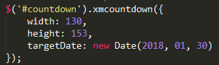
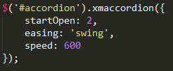
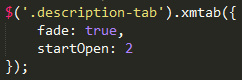

Introduction
Important Notes
Hi! Thanks for buying the Westeros HTML5 & CSS3 Responsive Template, we hope you enjoy our theme.
This documentation file will help you understand all the different options and features you will encounter. Please take the time to read through the documentation, as many support related questions can be answered simply by re-reading these instructions. Anyway, if you encounter with any problems, or have any further questions about the theme, just write us an email to: support@odindesign-themes.com or follow us on Twitter
Once again, thanks for purchasing our template. If you enjoy our items, please don't forget to rate them!.
The Pack
Template Specifications
- 18 HTML Files
- 6 Monster Illustrations Included! (Plus Shipping Van)
- Made with Photoshop Vectors for easier customization
- 9000x4800px Monsters Texture Included
- 3 Default Avatar Faces Included
- Fully Responsive
Plugins
Credits
Fonts Used
Credits
Home Page
index.html
The home page of the site has the following services:
- Countdown Plugin
- Accordion Plugin
- Tab Plugin
Countdown Plugin
API

width: the width of each countdown item. Default: 0
height: the height of each countdown item. Default: 0
targetDate: the target date of the countdown, it must be set using the javascript Date Object (Example: new Date(2015, 1, 27)). Default: false
Accordion Plugin
API
- autoClose
- startOpen
- easing
- speed

autoClose: boolean value, if true, when opening an item the others close automatically. Default: true.
startOpen: index of item to be opened initially. Default: 0
easing: easing applied when opening items, compatible with any jQuery easing. Default: 'swing'
speed: the speed of the animation. Default: 600
Tab Plugin
API

startOpen: index of item to be opened initially. Default: 1
fade: boolean indicating if fade effect is applied. Default: false
speed: the speed of the fade. Default: 600